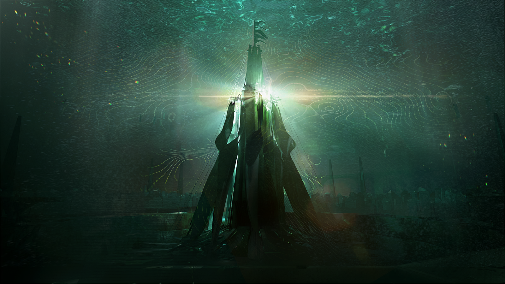
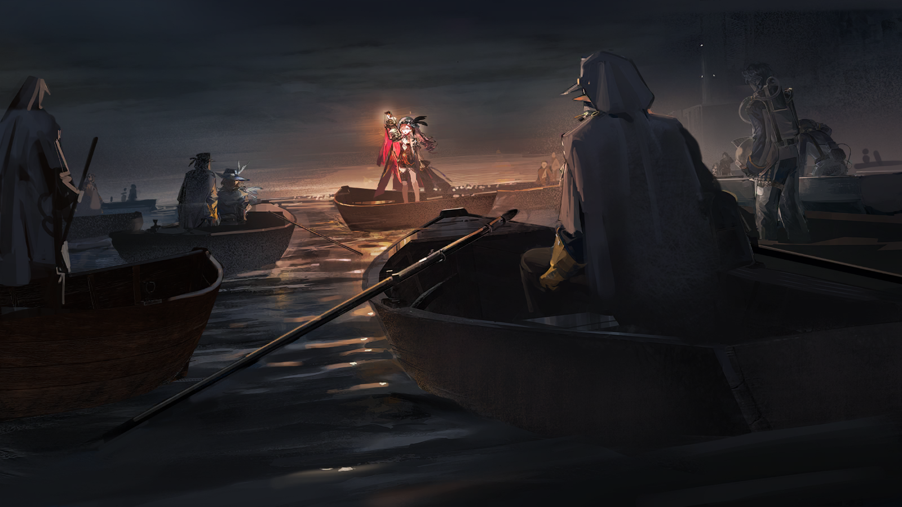
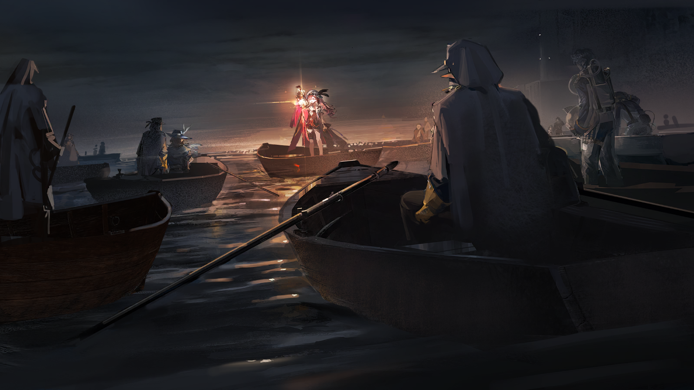
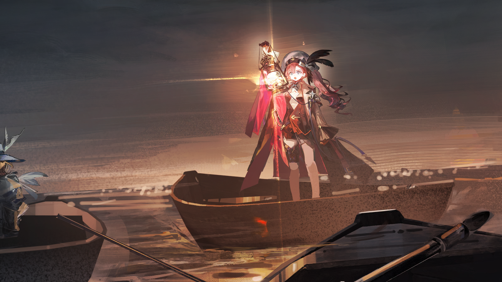
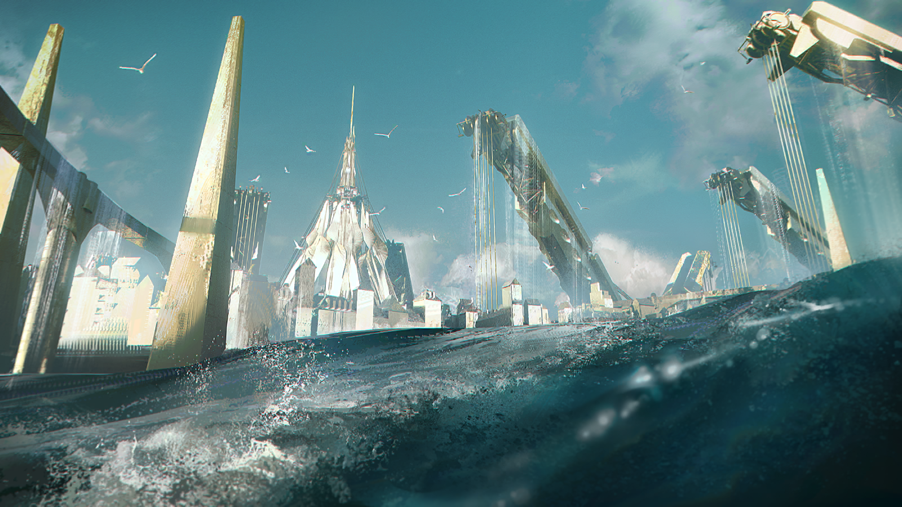

熟悉的和陌生的血腥味，一并涌入纳乔的鼻腔。
克莱门莎持剑的手还在不断地往外渗血。另一边，奥卢斯身上留下了一道更可怖的伤口。
幽蓝色的细小触肢从伤口深处探出，钩住皮肤，试图弥合血肉的裂痕。但它们还没开始生长，就纷纷凋亡。

奥卢斯
所以谈判彻底破裂了，是吗？

克莱门莎
只是免去了需要由你来交还港都中心城区的条件，奥卢斯。
奥卢斯
……纳乔不该死在这里。

克莱门莎
没有人会死在这里。

克莱门莎
纳乔，看看你的假肢。

纳乔
……克莱门莎监事？

纳乔
那些海嗣触肢……你都砍掉了？为什么？
克莱门莎
还有另一种办法，无需牺牲的办法。

克莱门莎
但那与你无关了，奥卢斯。带着你的伤离开，它不会致死，但也不会再愈合。
奥卢斯
那把剑，用的是第Ⅳ级武器的技术？

克莱门莎
还经过了一些改良。
克莱门莎
第Ⅳ级武器本就是基于生物信息设计的，自然也可以用来传递信息。
克莱门莎
我对你的需求，会通过那道伤口释放的特殊神经信号来传递，你的大脑会是唯一的接收终端。
克莱门莎
如果你没能履行，我也可以随时为你补上一场迟来的处决。
奥卢斯
到头来，我的性命还是落在你手里？
克莱门莎
早该如此。
奥卢斯
呵。
奥卢斯
……但愿你也能履行你的诺言。
克莱门莎
纳乔。

纳乔
克莱门莎监事，您的伤……
克莱门莎
还好。
克莱门莎俯身，从海嗣的断肢当中拾起了一枚小小的零件。
克莱门莎
给你，拿好。
纳乔
螺栓……还是这枚螺栓。为什么？

纳乔
为什么……我到底要记住什么，该怎么做？
纳乔
开始是鲁菲纳奶奶。最后那几年，我每天给她端水、熬粥、换药，以为她可以好起来……但没有，什么都没改变。
纳乔
她死了，把这枚螺栓留给了我。
纳乔
后来，是阿奎拉。我试过自己去找审判庭，也试过求奥卢斯先生和互助会的其他岛民帮忙……但还是什么都没改变。
纳乔
她也死了，留给我的还是只有这枚螺栓。
纳乔
现在，哪怕变成海嗣也好，我真的相信自己能把港都中心城区找回来，能多救下一些岛民。

纳乔
可为什么，您只是又把这枚螺栓还给我了？
克莱门莎
是啊，为什么？明明只是一枚螺栓。
克莱门莎
最初见到这枚螺栓的时候我就在想，为什么偏偏只有它是黄金时代的旧物？明明假肢上的其他零件都再普通不过。
克莱门莎
你说，你家里被审判庭搜查过太多次，就连零件都不剩什么了的时候，我还以为你的奶奶就只是受条件所迫，物尽其用而已。
克莱门莎
但这枚螺栓能躲过那么多次搜查，本身就不寻常，对吗？
纳乔
审判庭查得最严的，就是岛民的技术产物，和黄金时代的东西。
克莱门莎
这枚螺栓，恰好二者皆是。但它还是被留了下来。
克莱门莎
“她捏着仅剩的那一枚螺栓，就那么怔怔地看着我”……你这样说的时候，我忍不住想起海巡队向我报告过的一件事。
克莱门莎
一个已经被海嗣侵蚀得不成人形的技术员，抱着一瓶植物营养液，就那么怔怔地看着即将杀死她的海巡队指挥官。
克莱门莎
那是她在所有意识都溃散的最后，唯一还在乎的事情——她要去给她最珍视的藻类，再施一次肥。
克莱门莎
我想，或许鲁菲纳也是如此，阿奎拉也是如此。
克莱门莎
鲁菲纳一次又一次地从审判庭的搜查中藏下了这枚螺栓，阿奎拉凭自己的双手，从漫无边际的海床上摸回了这枚螺栓。
克莱门莎
不管毁掉什么、毁掉多少，这枚螺栓都是她们最后在乎的东西，是她们觉得最值得留下、留给你的东西。
克莱门莎
你之前说，她们在这枚螺栓里看到的，是仇恨。但我想，她们最想留下的，一定不是仇恨，她们已经太用力地在宣泄仇恨了。
克莱门莎
她们这些年压抑着想要证明，却拼了命也证明不了的东西——那才值得留下来、留给你。
克莱门莎
如果所有这些都寄托在一枚小小的螺栓上，那这枚来自黄金时代港都的螺栓，一定本身就有其特别之处。
纳乔
您能……扫描它之类的吗？我不想拆开它。

克莱门莎
当然。
纳乔
那些纹路……
克莱门莎
是收发信号的源石回路。
克莱门莎
哪怕审判庭找不到港都中心城区，阿戈尔找不到它，奥卢斯也找不到它……一位亲手建设过它的老工人，也会记得它在哪里。
克莱门莎
此时此刻，这枚螺栓正在接收港都中心城区的信号，也正在向它发送信号。

克莱门莎
正如它七十多年来一直在做的那样。
纳乔看着手中这枚陪伴了他近二十年的螺栓，它在灰暗的观测厅中微微发光。
这一刻，他突然意识到，在宵禁的深夜，在冷硬的铁床上，在辗转反侧的吱呀声中，甚至在他梦里的那一点光亮究竟是什么。
鲁菲纳奶奶对于这片土地的爱，哪怕所剩无几，也终究是没有消散。
让她觉得不公的是黄金时代的经历，而支撑她反抗的也是那段经历。
如此七十年。

伊比利亚工匠
港都，就这么完工了？
鲁菲纳
怎么，你不满意？
伊比利亚工匠
不，就是……你敢信吗，我们真造出来了这么夸张的一座城市。
鲁菲纳
活儿都干完了怎么还跟没睡醒似的。来，看看这是什么。
伊比利亚工匠
这不是我们一起捣鼓的那种螺栓？国王总在演讲里说港都属于王室，哈！他可不知道我们往里面钉了什么。
鲁菲纳
这是只有我们这些亲手给它砌了每一块砖、铺了每一片瓦的人，才知道的秘密。
伊比利亚工匠
会发光的螺栓，亏你想得出来。
鲁菲纳
我们所有人一起想的。如果不是你讲了那个拿灯泡当浮漂去钓鳞的蠢事，我还想不出这么好的点子呢。
鲁菲纳
我手上这枚，当它是个遥控开关吧，里面塞了个微缩的信号接收器。摁一下，整个港都的螺栓都会开始发光。
伊比利亚工匠
整个港都的螺栓都一起发光，那得是什么场面……
鲁菲纳
国王可以每天都强调一遍港都属于他，随他的便，但只要我们摁一下这枚螺栓——
鲁菲纳
这座城市里的每一个人，甚至海里的每一条鳞，都能看见，都能知道——我们来了，我们来过。
鲁菲纳
港都的每一块砖与每一片瓦，它承载的每一个昨天与每一个明天，都属于我们。
年轻的岛民把这枚螺栓高高举起。她看到自己的手越过海上的船帆、越过港口的吊臂、越过高塔上的旗帜。
远处，黄昏的最后一声钟响刚刚落下，高塔上的第一抹辉光刚刚亮起。
两束光短暂地交叠，亮如星辰。
亮如星辰。
纳乔
港都中心城区的坐标！
克莱门莎
这枚螺栓，确实收到了港都中心城区的信号。
克莱门莎
如果此时此刻，还能收到它的信号……那整座城市里的螺栓，一定都已经在发光了。就连恐鱼也会知道——
纳乔
我们来了，我们来过。
克莱门莎
那是鲁菲纳——也是许许多多岛民——一生都想要所有人都看到的场面、知道的事情。
克莱门莎
他们自豪过，也遗憾过；奋斗过，也挣扎过。他们有过很美好的情谊，创造出过很伟大的事物。
克莱门莎
六十三年的仇视、残杀，在最初的最初，就只是因为一个再简单不过的愿望——
克莱门莎
他们想让人看到，他们好好地存在过，而他们的存在，是有价值的。
纳乔
存在过，有价值……我们也是，对吗？
克莱门莎
唯独这件事，不需要我来告诉你，纳乔。
克莱门莎
那个名叫“雷亚-伊比利亚”的旧坐标已经被彻底抹除了，而我们眼前新生成的坐标，还没有名字。
克莱门莎
给它起个名字吧，好吗？
纳乔
……我吗？
克莱门莎
这枚螺栓本就是留给你的。
年轻的岛民沉默地走上前去。
几乎是下意识地，他抬起了手。
纳乔
刚刚装上假肢，生活还不能自理的那几年，我有个小小的习惯。
纳乔
我喜欢透过它透明的部分，去看窗外的东西。只要眯起眼睛，就好像枝头的羽兽，或者远处的云团，就在我的手臂里面。
纳乔
好像它们在那一刻是属于我的，好像我不是一无所有、无处可去。
纳乔
但我只敢这样去看些微不足道的东西。要么是羽兽或云，要么就是别家晾晒的鳞干、集雨用的帆布风筝。
纳乔
如果这样去看街上的人，我就会忍不住提醒自己，他们的生活终归与我无关，我还是只能被人忌惮、被人怪罪、一无所有、无处可去。
纳乔
像我这样的人还有很多。
纳乔
伊比利亚的人们——岛民也好，其他人也好——都太畏缩，哪怕拼命地搏出了一种生活，也不敢相信那样的生活属于自己。
纳乔
所以大家才要不断怪罪别人夺走了什么，才要不断祈求一位救主。
纳乔
但其实，没有谁是谁的救主，对不对？我们的一切，都是我们自己挣扎的结果。
纳乔
所以，如果要我替所有人给它起个名字。
他的手越过海床上的沟壑、越过海面上的乱流、越过海岸边的村镇……
遮住了那枚最闪亮的光点。好像港都，就在他的手臂之中。
有一瞬间，他几乎要相信——
不。他确切地相信。
那枚光点——那座城市，它的每一块砖与每一片瓦，它承载的每一个昨天与每一个明天，都属于他。
属于这里的每一个人，属于这里的任何一个人。
年轻的岛民踮起脚，想把手举得再高一点，想把那枚属于港都的光点更完整地容纳进自己的手臂。
纳乔
那它该叫——

德鲁莎
不用顾虑，大审判官阁下，你可以用你的手炮。

斐戴拉
呵，你跟我贴得这么近，不就是因为知道手炮在这个距离下不方便使用？
德鲁莎
被你识破了，不过这只是原因之一。
斐戴拉
不对……
斐戴拉
呃！

德鲁莎
近身格斗的水平相当不错啊，我会在你的档案里给你评个优秀的。

德鲁莎
嘶，这下伤口是彻底裂开了，南多又要多嘴……知道你为什么输了吗，大审判官阁下？
斐戴拉
技不如人。

德鲁莎
我也很想这么说，但不是因为这个。你总是护着那盏暗淡的提灯，好像它是一件易碎品。
德鲁莎
但或许你没注意到，在过招的时候，它已然恢复了原本的光芒。
斐戴拉
……
德鲁莎
你或许不会因此高兴，但大审判官的职责已然刻进了你的本能，你重视自己的存亡，因为你清楚自己背负的职责。
德鲁莎
既然如此，你也应当能做到背负着过错走下去。哪怕伊比利亚没有一位圣徒阁下，你也能赎清自己的罪。
斐戴拉
……
斐戴拉
你说话的方式真像一名教官。
德鲁莎
我本来就是。
斐戴拉
我……做了一个错误的决定，我会接受审判庭的一切惩罚。
德鲁莎
那不如先考虑一下如何戴罪立功？看你身后。
大审判官回头，海岸边的船厂迸发出金色的光芒。
黄金的海图悬浮在空中，而那个本已消失的光点，重新回到了海图之上。
斐戴拉
“我们的伊比利亚”……奇迹……
德鲁莎
我想是因为克莱门莎监事的努力，她只身前往水下观测厅，带回了佳讯。
斐戴拉
我们需要召集足够的人手打捞，光是审判庭的人或许……

德鲁莎
遇到大事别老想着只有审判庭的人可以用。
德鲁莎
听听，我觉得今天晚上的船厂似乎很热闹。

艾丽妮
雷亚-伊比利亚的坐标已经重新亮起，但由于主引擎被破坏，整座中心城区沉入了海底。

艾丽妮
我们需要立刻驾船出海，把它拖回岸边。
艾丽妮
不过港都中心城区体量太大，没有太多重型设备的加持，我们需要尽可能多的人手。
惩戒军士兵
艾丽妮，现在审判庭大部分队伍依旧在城区内保障民众安全，海嗣数量不容小觑……

艾丽妮
是否能征用船厂的工匠？
惩戒军士兵
港都坐标被抹去，恐鱼上岸之后，这里的工作人员就已经撤离了，这个时间点恐怕很难再召集……
？？？
哪位长官说很难召集？

特菲
失落的贵族、伊比利亚王室海军的后裔——埃斯特菲尼娅·科隆·德·托莱多，带着我的海军舰队，向您报到！

特菲
赎罪……赎罪……向船厂的拥护者们承认我的身份？
特菲
不，虽然原本我是为了赚取维生的费用，才谎称贵族，招募海军的。

特菲
但现在，既然已经有人相信我，愿意听我说那些黄金时代的故事，我就不能把他们抛还给他们艰苦的生活。

特菲
万一再有人像萨尔瓦多一样，为了一串念珠连命都不要，那还不如跟我一起坑蒙拐骗，好歹我能分他们一口饭吃……
？？？
什么坑蒙拐骗？

特菲
萨尔瓦多？这么危险，你怎么跑出来了？

萨尔瓦多
我来确认海图，你说你会把它点亮。只有看到结果，我才能决定是否相信你。
特菲
我食言了，我不仅没有点亮海图，还让港都的坐标消失了，我——
萨尔瓦多
我以为，你是还没有点亮海图。
特菲
嗯？

特菲
对啊……不是“没有”点亮，是“还没有”……
特菲
萨尔瓦多，你知道船工们都躲到哪里去了吗？
萨尔瓦多
船厂宿舍。
特菲
好，我跟你一起去？
萨尔瓦多
你不去点亮海图？

特菲
点什么海图，我要带你们去亲自把港都中心城区找回来！
特菲
王室海军舰队的成员都在这里了，长官们，我们熟悉船只和海上作业，我们能帮着把港都中心城区带回来。
惩戒军士兵
这……不该是你们的职责。
惩戒军士兵
而且你们手上连一盏提灯都没有，深夜出海太危险了。审判庭的任务应当是优先保证你们的安全。

艾丽妮
但——

艾丽妮
如果这是你们的决定，审判庭也会保障你们执行这项决定的自由。
特菲
好！
特菲
长官们不用担心，伊比利亚每家每户都有油灯，船厂也备了不少，我们可以照亮海面搜寻中心城区的踪迹……欸，我的油灯哪儿去了？
艾丽妮
用我的吧。
惩戒军士兵
艾丽妮？
审判庭信使收回提灯中的法术，粉色的灯火渐渐暗淡。
现在她手上的提灯不再具有审判庭的特征，如同一盏能出现在每个伊比利亚人手中的油灯。
只为照亮黑暗。

艾丽妮
你可以往里面扔一枚火柴、一块木炭，或者一碟鳞油。
艾丽妮
虽然没有审判庭的法术，但它依旧可以照亮你的路。
特菲
谢谢您，长官！

艾丽妮
既然要把中心城区拖回来，除了人手之外，还需要便携的固定器材，你们知道它的使用方法吗？
特菲
大概清楚，但打捞像港都中心城区这样大体量的建筑，器材的默认参数可能不太合适。
特菲
但会调参数的只有打捞中心的那些岛民……
？？？
只要熟知算式，任何人都可以学会调整器材的参数。

岛民
我们可以帮忙调整。
惩戒军士兵
列队！
艾丽妮
等等。
艾丽妮
各位，我们需要确认你们的来意，我们不会将参与打捞的行为视作谈判桌上的交易。

岛民
我们确实希望借由港都中心城区进行谈判，获得在伊比利亚得到正视的机会。曾有一些时刻，我们确实希望能报复审判庭和伊比利亚。
岛民
但，至少现在，我们想看一眼我们的祖辈念叨了一辈子的港都中心城区究竟长什么样子，他们负责修建的导水桥，又是哪几座。
岛民
打捞之后，我们的去留，再做打算。
特菲
我就说嘛，岛民和伊比利亚人本就是合作关系，岛民也会随王室海军舰队一同出行。
特菲
走，我们去海边。
大海的声响。
如同巨浪扑打礁石，木船沉入峡湾。特菲走过伊比利亚的很多地方，今天听到的与以往听到的没有任何不同。
但我的心为何如此雀跃？她怔怔地想。


近海亮起了一盏灯，它没有任何法术，无法灼伤恐鱼，也无法庇佑使用者，但它闪耀着更为明亮的火焰。
它被特菲提在手中，映亮了海上每一艘打捞船，和每一个人的脸庞。
今夜之前，这些“德·托莱多”的拥护者在外人眼中无疑是愚昧、可笑的，而伴随他们左右的岛民则是危险、邪恶的。
可现在正是这支支离破碎的“王室海军舰队”漂浮在危险的大海上，而他们的引导者仍像之前那样侃侃而谈。

特菲
德·托莱多家族的拥护者、无上的舰队船员、伊比利亚忠诚的子民们！
特菲
我们即将亲手打捞起黄金时代的旧都，在行动前，我将对你们说最后一个关于它的故事——关于它的落幕。
特菲
一位高级海军军官的后裔有幸躲过了可怕的大静谧，他花掉最后的财产在一个捕鳞村买下了一间木屋，打算怀着恐惧度过余生。
特菲
他秉持着贵族的礼仪，打理军装成为他每天最重要的事，他从手记里回忆伊比利亚的过去，不肯承认屋外灰色的大海曾是他的向往之地。
特菲
他孤独地走过半个世纪，走向生命的尽头，而他人生的最后一晚，是一个冰冷的雨夜。
特菲
寒风钻进他无力修缮的破屋，他睁着昏聩的眼睛，看到了一个流浪儿，将他的屋子错认作废宅寻求庇护。
特菲
老军官没有把她赶走，而是点燃了篝火供两人取暖，并且向她讲述了自己的人生。
特菲
灾祸之后老军官从未如此开心过，他第一次觉得自己的记忆带来的不再是痛苦，而对于那个流浪儿来说，她完全被故事迷住了。
特菲
第二天，老人死了，如同任何一个黄金时代的人一样，但镇上出现了一个爱讲故事的新军官。
特菲
这就是黄金时代的落幕，却也是另一个时代的开始。
特菲
哪怕另一个时代是混沌的、污秽的、黑暗的，它也是我们现在经历的一切，是每一个被摧残的小镇，是今夜。
船工
我们……真的能把港都中心城区找回来吗……就算它回来了，日子会变得更好吗？
岛民
不会，我以我的经历告诉你，任何事都不可能马上变好，甚至它还会带来更多风波。
特菲
是的，但我们会做成一件不可能的事，一件足以被编成故事广为流传的事。
特菲
然后，就会有更多人像那个流浪儿一样去传播这些故事，给挣扎的伊比利亚人一点希望，给在仇恨中无法脱离的岛民一点希望。
特菲
我们善于等待，善于忍耐，是因为我们，至少我们中的一部分人打心眼里觉得这个地方会好起来。
特菲
因为我们还在被黄金时代的故事和岛民祖辈留下的遗物感动，因为我们从不计较真假，因为早在百年前我们就能实现幻想。
特菲
我是特菲，哪怕没有姓氏，我也会在今夜出航，打捞雷亚-伊比利亚，让它变成我们的黎明，我们的太阳。
特菲
全体都有！伊比利亚平民海军舰队，出航！

瓦列里奥
我感受不到你有丝毫决心，卡门，为什么不再出剑了？！

圣徒卡门
你已经站不稳了。如果我的剑要用来杀死什么，那只应该是伊比利亚的敌人，就像它过去的六十三年那样。

瓦列里奥
我现在就是你的敌人！我们之中总有一个人会成为伊比利亚的敌人，而另一个，会成为伊比利亚的教宗。

圣徒卡门
……不。
圣徒卡门
你听，外面。

瓦列里奥
呐喊声，脚步声，不过是些迷茫的人在无谓地挣扎。
圣徒卡门
如果你真心想要引导那些人、守护那些人，你该更仔细地去听他们的声音。
瓦列里奥
……他们喊的是……“打捞港都”？
圣徒卡门
你还没有明白吗，瓦列里奥？
圣徒卡门
现在，我们中的任何一个从地牢中走出去，伊比利亚都不会诞生一位教宗。
瓦列里奥
不……把剑拔出来！不该就这样草率地结束！
圣徒卡门
如果你需要的是为五十三年前的事做个了结，我向你道歉，瓦列里奥。不是作为圣徒，而是作为曾经的朋友。

圣徒卡门
你的牺牲，我难辞其咎。

瓦列里奥
你——
圣徒卡门
但我想，你现在需要的一定已经不是这个了。
圣徒卡门
直到此刻你仍然相信，只有共同的敌人才能将伊比利亚人团结起来，只有唯一的教宗才能为伊比利亚人指明方向。
圣徒卡门
但伊比利亚已然不需要这些了。

圣徒卡门
你听，你听。港都消失了，港都沉没了，但外面没有一个人在祈求原谅或审判。

圣徒卡门
他们在呐喊着，要用自己的手把港都带回来，哪怕那是几乎不可能完成的艰巨任务。
圣徒卡门
难道此时此刻的伊比利亚人，会因为你我其中一人浑身是血地走出地牢，就回头多看一眼？

瓦列里奥
……
圣徒卡门
伊比利亚已经给出了她的答案，以一种远比决斗更有意义的方式。
圣徒卡门
也放下你的剑吧，好好听听伊比利亚的声音。
圣徒卡门
就像我们过去那样。我也多少年没有一个同伴在我身边，和我一起倾听这片我们深爱的土地了……
瓦列里奥
……如果只是一会儿的话。我还是随时可以杀你。

圣徒卡门
一会儿就够了。

紧张的平民
喂！你听到什么声音了吗？
不安的平民
没有……什么都没有……
不安的平民
那些出海打捞的人没有回来，审判庭的人也没有回来……

紧张的平民
好安静，安静得可怕，就像六十三年前的那天——
不安的平民
别胡说！哪怕港都中心城区不再回来，我们现在也已经站在它的外围城区之上了，没关系，我们会好起来的……
在觊觎它蕴藏的财富、畏惧它裹挟的灾祸之前，人们对它最早的描述，是一片会呼吸的蔚蓝大地。
而此刻，它比任何人所见时都更剧烈地呼吸起来。环状的起重机阵列之中，海面高高隆起。
然后，只一瞬间，大海的胸腔迸裂开来。

上百艘打捞船拖着打捞缆绳向他们驶来，如密布的鳞群。
它们牵引着大海金色的心脏，如同捞起了一轮太阳。
海岸上的人们站在冰冷的、“沸腾”的海水里，见证伊比利亚迎回它失落已久的旧都。
它，不同于如今这片土地上的任何建筑。
张扬的塔尖、被海水浸泡已久却仍旧洁白的旗帜、四通八达的廊桥和大大小小的船坞……
它们甚至不会出现在人们的梦里，此刻却出现在了他们眼前。
他们流下眼泪，他们无法用语言来形容自己的心情，他们古怪地被一件前所未见的事物打动。
他们想起了半个月前，一个无名的伊比利亚人在广场上唱的歌，既然无法言语，那就歌唱——
伊比利亚人
今天有一艘船出航♪
伊比利亚人
越过灯塔，越过教堂♪
伊比利亚人
潮湿的水汽吹向海岸♪
伊比利亚人
“扬帆”，舵不在风的手上♪
伊比利亚人
今天有一艘船出航♪
伊比利亚人
羽兽在船舷上踱步——♪
伊比利亚人
空等一场吧。吹响号角，收紧鳞网♪
伊比利亚人
我们捞起太阳♪
慌张的岛民
导师？您受伤了？
奥卢斯
是我早该受的伤。
奥卢斯
以及，不必再叫我“导师”了。我暂时没什么能“教导”你们的了。
慌张的岛民
呃，奥卢斯先生？
慌张的岛民
那，您需要我去找医生吗？或者您的“同胞”可以帮到您吗？
奥卢斯
不必了。
奥卢斯
互助会看来也分崩离析了？
慌张的岛民
有些人跟着船厂的船工出海打捞还没回来。
慌张的岛民
有些人知道谈判不成已经北上，试图寻求国防军的庇护；有些人甚至决定加入深海教会。
慌张的岛民
有些人还在犹豫，但刚刚来了一个阿戈尔的女孩，她说……

塔西塔
我说，阿戈尔愿意为不想留在伊比利亚的岛民提供庇护。

塔西塔
许多年前，由于海嗣侵害，第一批离开本境的阿戈尔人不得不上岸寻求帮助。
塔西塔
而现在，我们可以接回自己的同胞，带他们回家。
奥卢斯
……
奥卢斯
谢谢你，好心的小姐。我身边的这些人，就麻烦你了。

塔西塔
如果先生您愿意回阿戈尔，弥利亚留姆也会为您提供一系列生活保障和就业指导。
奥卢斯
我就不必了。
慌张的岛民
奥卢斯先生？您要抛弃我们？
奥卢斯
我只是有段不方便让你们同行的路要走。
奥卢斯
但我不会忘了你们，也不会忘了我们的“理想国”。我们会在那里再见。
奥卢斯
会有那一天的。